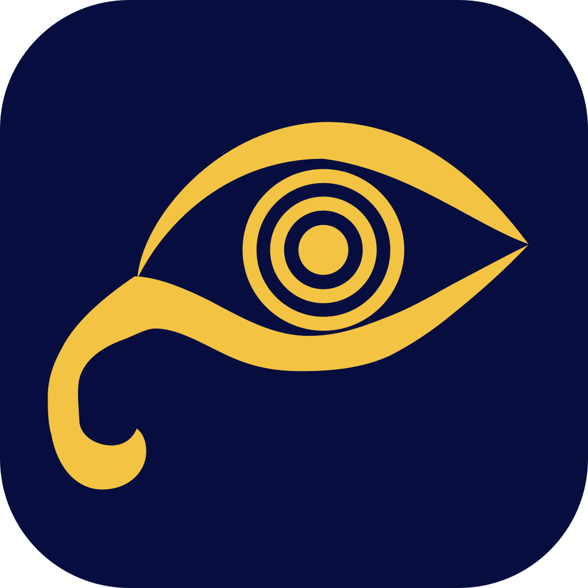

Mubsir
مُبصِر
An AI screen assistant for blind and low‑vision Windows users, in Arabic and English.
The mark
An eye
Mubsir sees the screen for you.
Sound rings
Its iris is a voice: it listens and speaks.
The tail of م
The lower lid becomes the first letter of مُبصِر.
Every size, drawn for its size
16
20
24
32
48
64
128 px
In the Windows tray (100 % and 150 % scaling)
Dark taskbar
Light taskbar
Colours
Night
#080D3F
Tile, dark surfaces
Amber
#F3C343
Mark · 11.1 : 1 on Night
Cream
#FFF4DE
Text · 16.9 : 1 on Night
Crest
#E2703A
Warnings in the notch